El presidente dice que reducir el gravamen sobre el carburante impediría el equilibrio presupuestario.
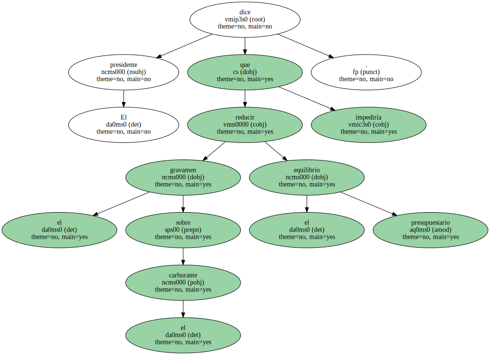CiU tampoco desea bajar tasas , el PSOE aboga por el modelo francés e IU propone una rebaja selectiva.
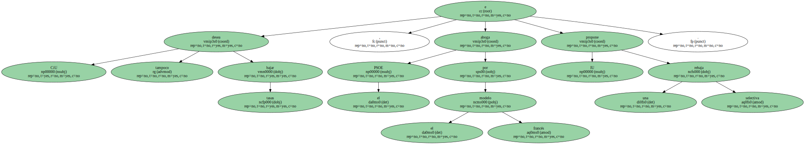El presidente del Gobierno , José María Aznar , se mostró ayer contrario a una rebaja del impuesto especial sobre hidrocarburos para compensar la subida del precio del petróleo y de los carburantes.
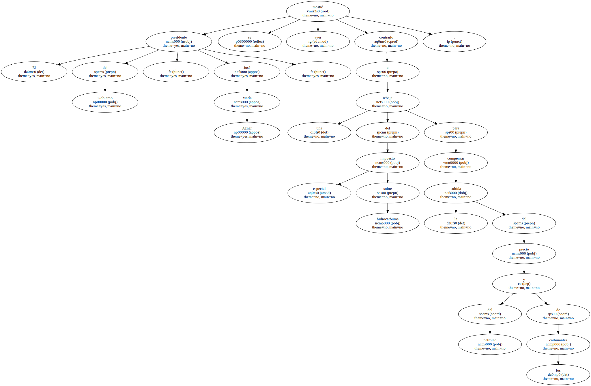En rueda de prensa , el presidente del Gobierno explicó que , para garantizar el crecimiento económico , " no se puede en ningún caso perturbar el camino del equilibrio presupuestario " previsto para el 2001.
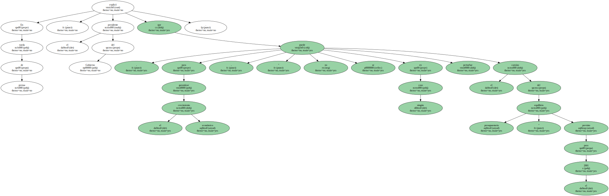El Gobierno confía en que los países productores de petróleo de la OPEP permitan un abaratamiento de los precios.
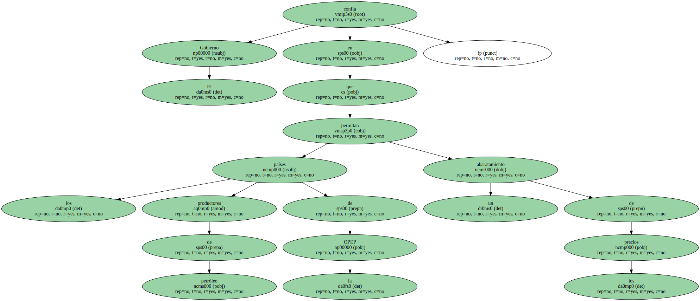" Comprendo que a nadie le guste pagar más por la gasolina y que el precio del barril suba , pero es lo que hay " , dijo.
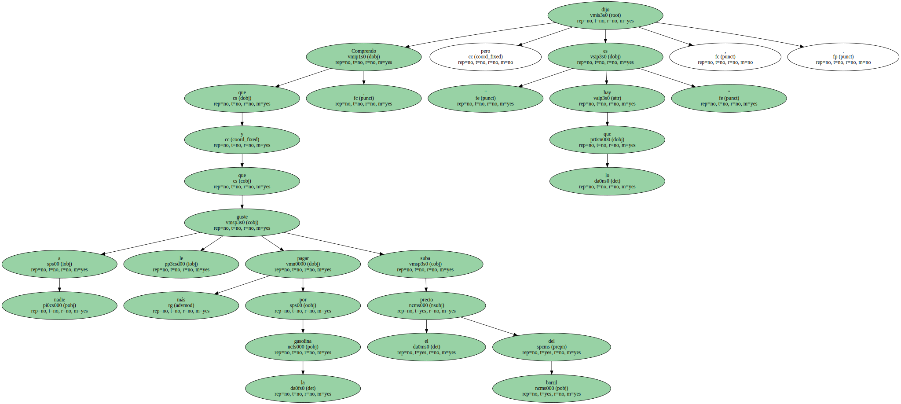Aznar insistió en que " en España , hay precios menores y una fiscalidad más baja " y dijo que los carburantes han subido menos que en los demás países ( no así en porcentaje ).
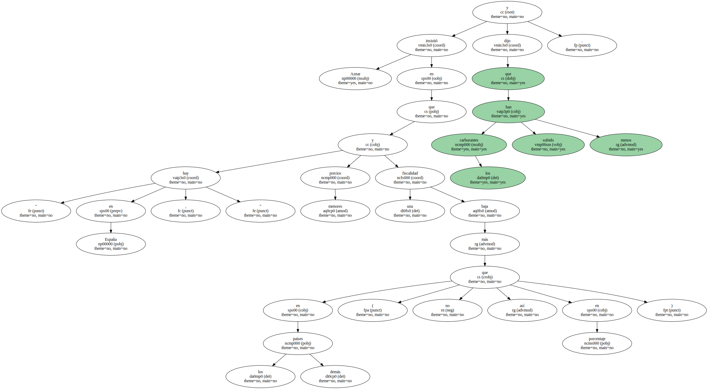El presidente hizo un balance muy positivo de la economía española , con especial referencia a la buena marcha del empleo , si bien admitió su preocupación por la inflación.
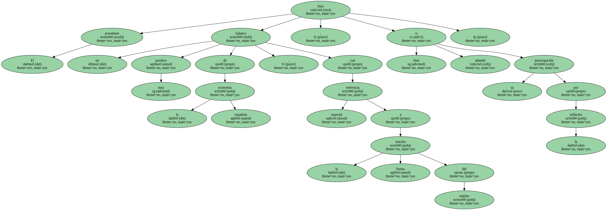Ante este problema , dijo , será " beligerante en lo que dependa del Gobierno ".
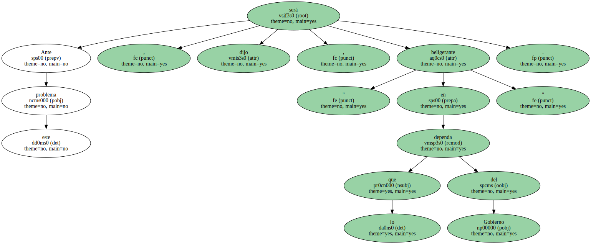Así , aludió a las medidas liberalizadoras aprobadas en Junio , al equilibrio presupuestario previsto para el 2001 y a la ley de estabilidad presupuestaria que el Gobierno aprobará en las próximas semanas.
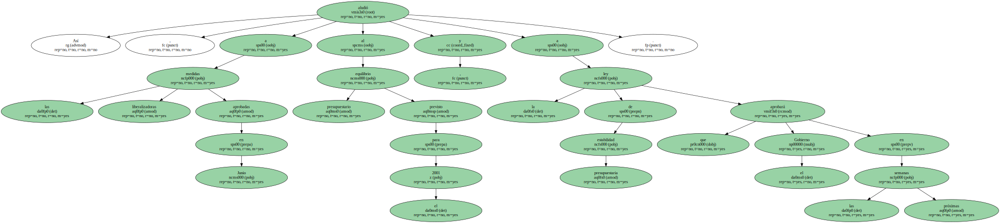Además , apeló a la responsabilidad de los empresarios del sector servicios y turísticos para que reflexionen sobre " el espectacular desarrollo " de sus beneficios y sus precios.
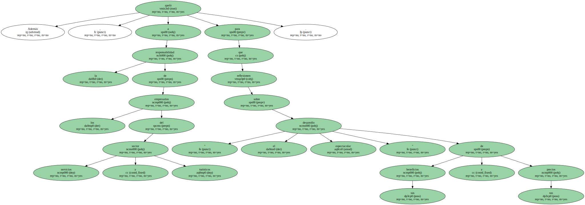El ejemplo francés.
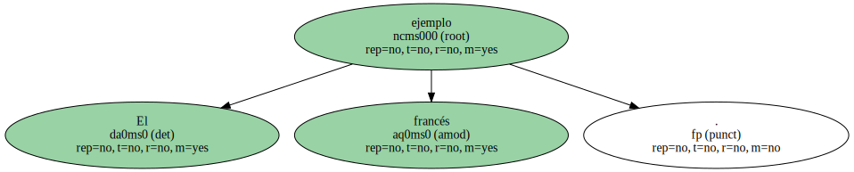En la batalla de los impuestos de los carburantes , Aznar tiene a su favor a CiU y , en contra , a PSOE e IU.
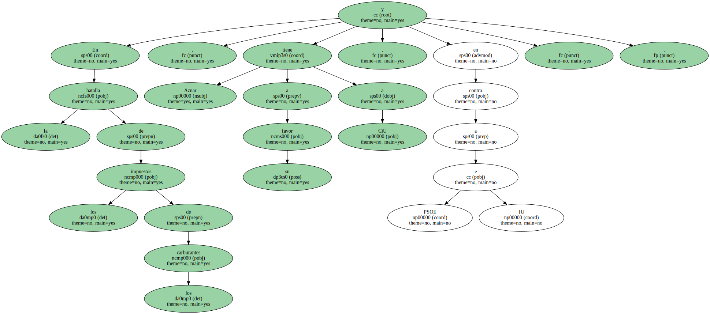El portavoz del Gobierno catalán , Artur Mas , manifestó ayer que " actuar para rebajar el precio de los carburantes no debe poner en peligro el objetivo del déficit cero del Gobierno ".
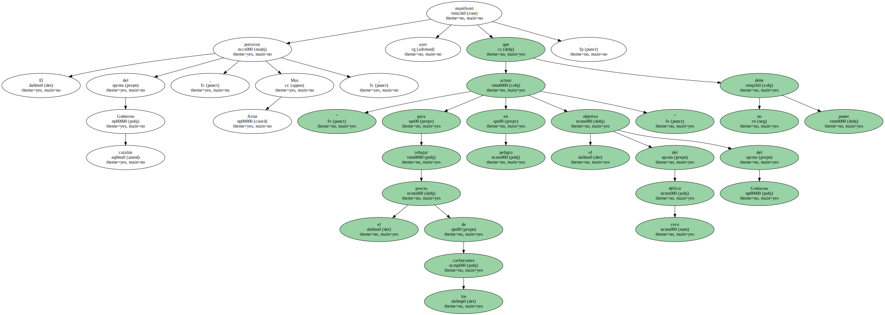No obstante , añadió que en el debate sobre los Presupuestos del Estado se estudiará si es posible bajar el impuesto sin perjudicar la consecución de ese objetivo.
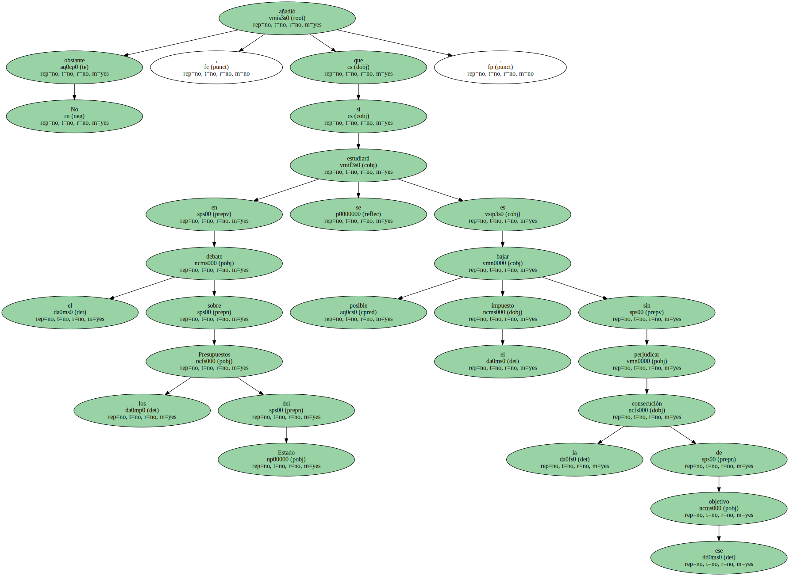Mas restó gravedad a la subida de los carburantes y dijo que " la escalada de precios es claramente negativa y perjudicial para algunos sectores económicos como la pesca o la agricultura , pero , más allá de los sectores económicos , la subida no es preocupante , aunque sí molesta y causante de nerviosismo entre los ciudadanos por el desconocimiento y la incomprensión de los motivos de la subida ".
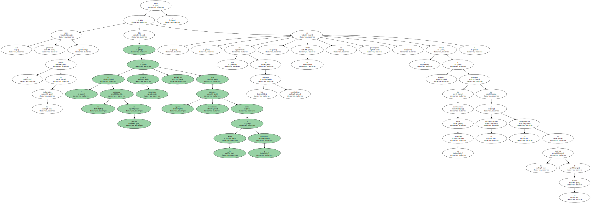Desde el PSOE , el secretario de Política Económica , Jordi Sevilla , pidió al Gobierno que siga el ejemplo del Gobierno francés y baje los impuestos de los carburantes.

Según Sevilla , ha quedado demostrado que " otros gobiernos europeos tienen mucha más sensibilidad y cintura política en este asunto ".
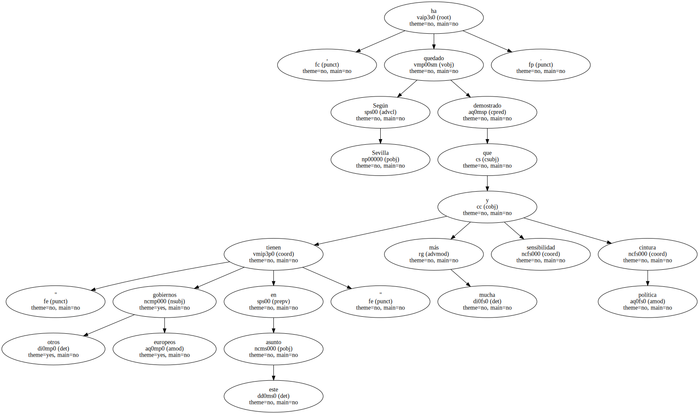El portavoz económico de IU , Gaspar Llamazares , se mostró partidario de aplicar una rebaja selectiva de los impuestos a los sectores más desfavorecidos , como el pesquero y el agrario , pero no de forma generalizada.
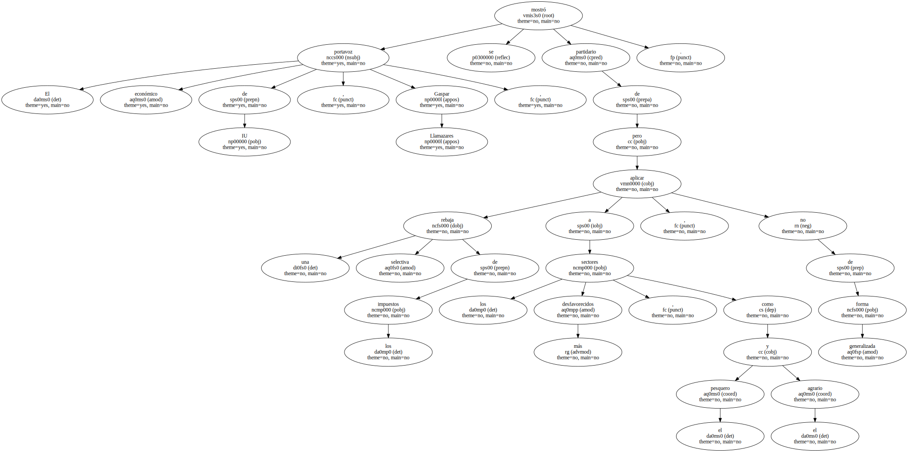Vicente Martínez Pujalte , del PP , dijo que una rebaja de impuestos podría tener efectos negativos si las petroleras la aprovechan para subir sus beneficios.
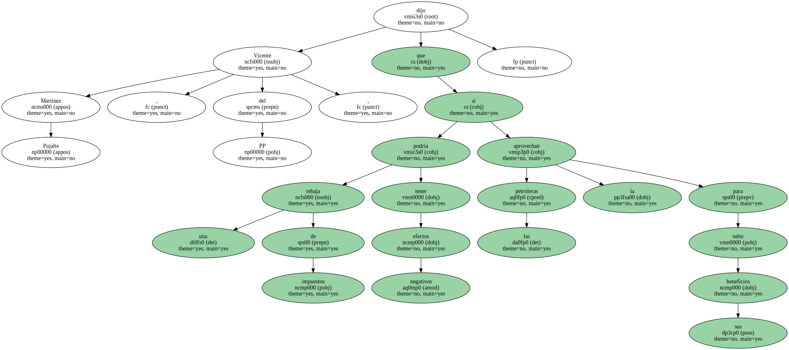